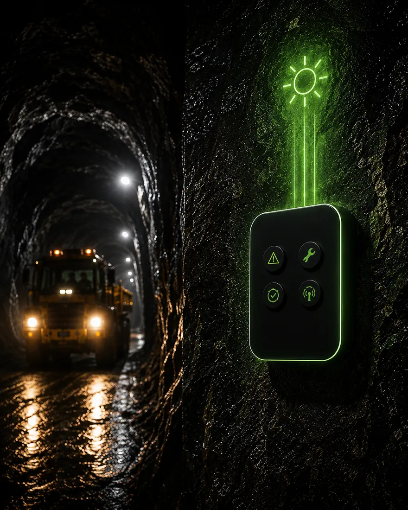
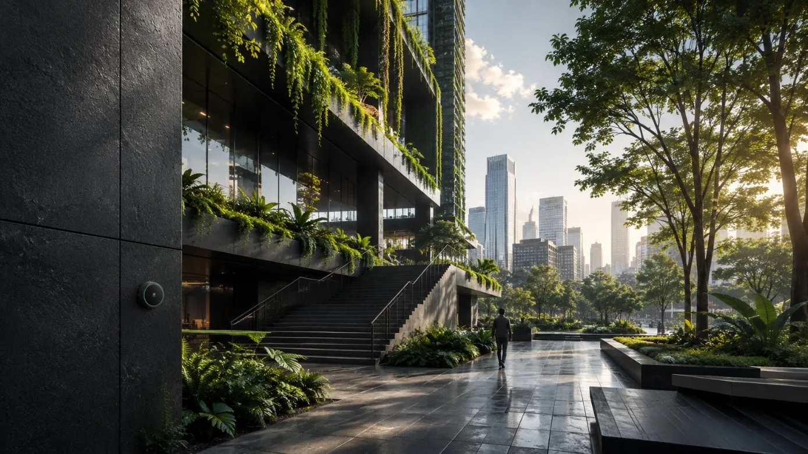
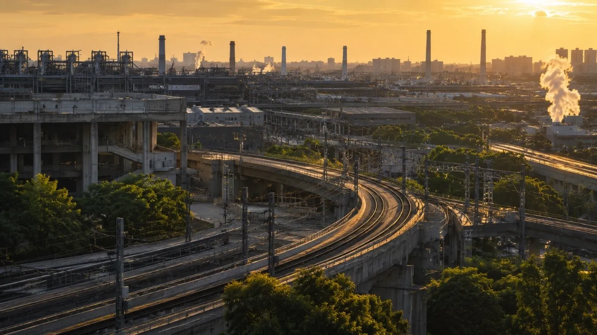
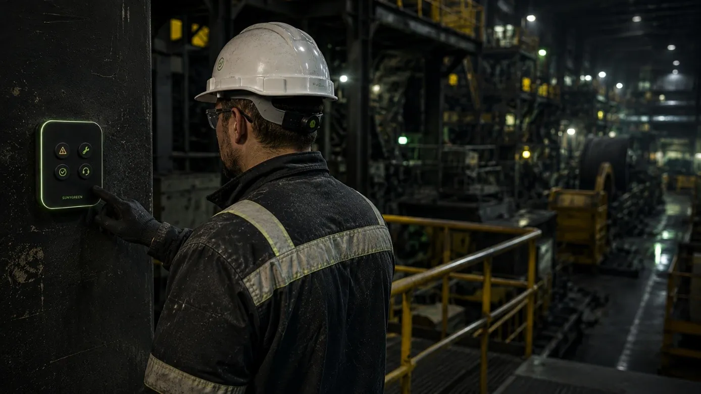
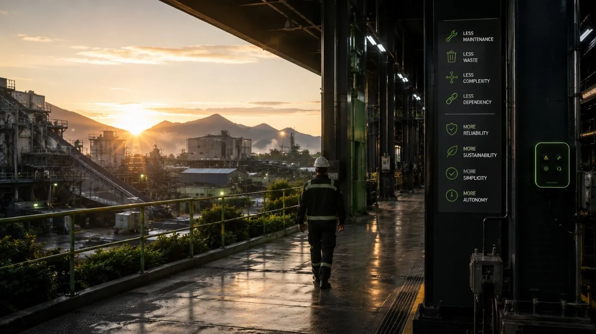
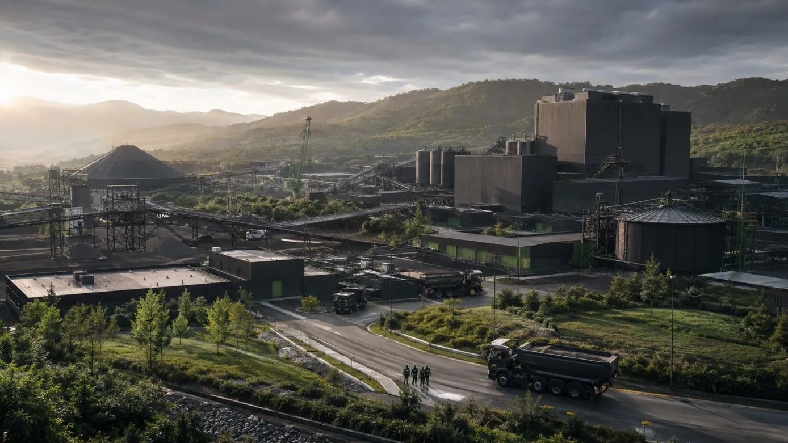
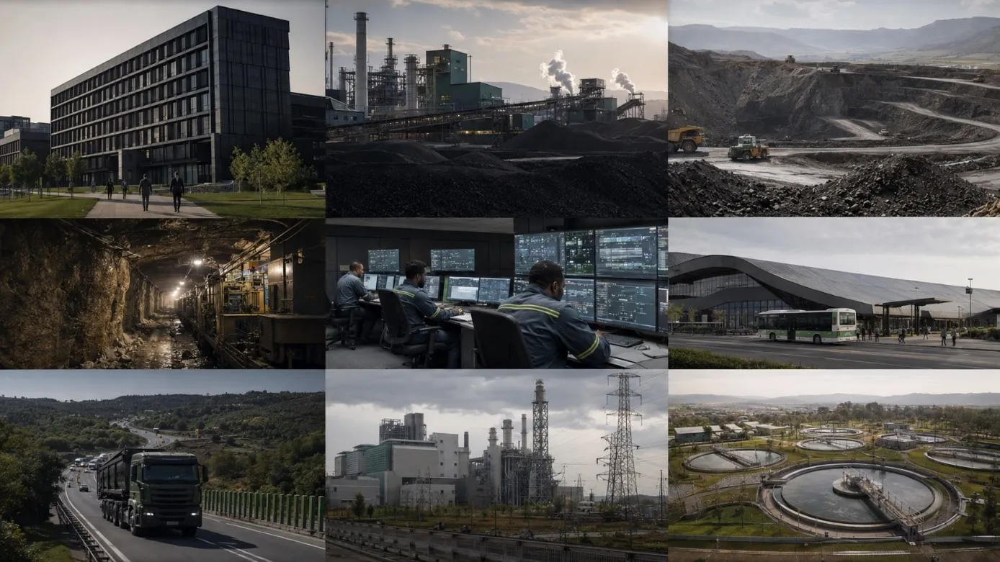
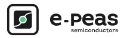

Harvest
An organic photovoltaic cell draws energy from ambient light. Workshop lighting is enough: full sunlight is not required.

Building the infrastructure of tomorrow
As the world grows and infrastructure expands, organizations face a common challenge: delivering more value, greater resilience and better services while consuming fewer resources. SunyGreen develops the autonomous technologies that make this transition possible.
Measured range
through concrete
Autonomy
no battery, no wiring
Installation
no building work

A world under pressure
A global contradiction is emerging. Around the world, infrastructure is becoming more connected, more complex and more essential. Yet the resources required to power, maintain and sustain these systems remain limited. The challenge is no longer growth alone. It is sustainable growth.
It is expanding across every sector, at a pace that is not slowing.
It now reaches every environment, including the least accessible.
Energy, materials and maintenance cannot simply be scaled up.
Safety, performance and sustainability are now expected together.

Why it matters
Infrastructure exists to serve people. Requesting assistance, accessing a service, triggering an alert: every interaction matters, and each one relies on infrastructure that has to respond.
Raising the alert at the moment it actually changes something.
A simple gesture, within reach, in any environment.
A system that answers without depending on a battery or a cable.
A service that is not interrupted for maintenance.

The shift
Less dependency, more resilience. Infrastructure should not require continuous intervention to remain operational.
Our response
SunyGreen receives no energy from outside. It harvests what is already present in its environment, stores it, and communicates only when it matters.

Impact
Less waste, lower resource use, a reduced footprint: every device deployed means disposable batteries avoided for life.
Less maintenance, greater uptime, faster deployment: total cost of ownership falls and efficiency rises.
Safer interactions and improved continuity of service, carried by an IoT value chain designed and validated in Europe.

Applications
One technology answers wherever energy, cabling or range stand in the way. The project focuses first on three priority sectors; the others will follow.
The range and autonomy figures shown are project targets, currently being validated in real-world conditions at the pilot customer site.
Comparison
| Criterion | Battery buttons | Wired systems | SunyGreen |
|---|---|---|---|
| Power | Batteries to replace | Mains powered | Self-powered by light |
| Installation | Quick | Long, costly wiring | A few minutes |
| In-building range | Limited | As far as the cable | 800 m+ concrete |
| Maintenance | Battery replacement | Wired intervention | None |
Scroll the table sideways to see it all →
The consortium
Each partner contributes one link of the solution, from the component to validation in real-world conditions.
Charleroi · Belgium
Design of the IoT node and embedded electronics.

Partner
Ultra-low-power management (PMIC).
Partner
Flexible energy storage paired with OPV harvesting.
Ovifat · Pilot customer
Validation in a real operational environment.
Roadmap
The project advances SunyGreen from TRL 5, validated in the laboratory, to TRL 7, a prototype demonstrated in real conditions at the customer site.
Months 1 to 2 · TRL 5
Consolidated laboratory validation, specification of the autonomous node and the software chain.
Months 3 to 5 · TRL 6
OPV + PMIC + long-range BLE integration, low-power firmware, representative testing.
Months 6 to 8 · TRL 6 to 7
Installation at DHF (Ovifat), range and autonomy measurements in real industrial conditions.
Month 9 · TRL 7
Prototype demonstrated in an operational environment: the final milestone of the project.
The future
More sustainable. More resilient. More human. Building better infrastructure is no longer an ambition, it has become a necessity.
Contact
Evaluator, partner or manufacturer interested in a pilot: write to us and we will reply quickly.